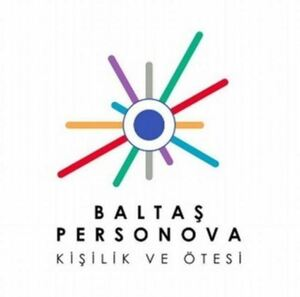

Trade Mark Journal No.2025/025 20 June 2025
WO0000001846469 (16,35,41,44)
Office of origin: Turkey
Date of International Registration:12 December 2024
Date of designation in the UK:
12 December 2024

International priority date claimed: 27 November 2024
(Turkey)
- Class 16
- Paper, cardboard (paperboard); packaging and wrapping materials made of paper or cardboard, cardboard boxes; paper towels, toilet papers, paper napkins; plastic materials for packaging and wrapping purposes; printing blocks and types, and bookbinding materials; printed publications, printed matter; books, magazines, newspapers, bill books, printed dispatch notes, printed vouchers, calendars, posters, photographs (printed), banners, paintings, stickers [stationery], postage stamps; printed test booklets, blank answer sheets, and technical manuals/guidelines for personnel assessment in the field of psychology; publications, namely brochures, introductory handbooks, stationeries and books in the fields of industrial/organizational psychology; a range of books and written articles on business and organizational psychology; printed reports containing assessment test results; printed materials, namely computer-generated scored assessment test forms, interpretive printed reports, guidelines and printed answer sheets; stationery, office stationery, instructional and teaching materials, writing, drawing, painting implements and artists' materials (other than furniture and devices); paper products for stationery purposes, adhesives for stationery purposes, pens, pencils, erasers, adhesive tapes for stationery purposes, cardboard for handicrafts, writing papers, copying papers, paper rolls for cash registers, drawing instruments, chalkboards, art paints; office requisites; paint rollers and paintbrushes for whitewashing and painting.
- Class 35
- Advertising, marketing and public relations, organization of exhibitions and trade fairs for commercial and advertising purposes, development of advertising concepts; provision of an online marketplace (website) for buyers and sellers of goods and services; office functions; secretarial services, arranging newspaper subscriptions for others, compilation of statistics, rental of office machines, systemization of information into computer databases, telephone answering services; business management, business administration and business consultancy, book-keeping and accounting services related thereto, personnel placement, employment, personnel selection, personnel recruitment services, import-export agencies, temporary personnel assignment services (paying bills, paying taxes, following up traffic processes for others); auctioneering; the bringing together, for the benefit of others, of a variety of goods, namely paper, cardboard (paperboard), packaging and wrapping materials made of paper or cardboard, cardboard boxes, disposable products made of paper (other than stationery), paper towels, toilet papers, paper napkins, plastic materials for packaging and wrapping purposes, printing blocks and types and bookbinding materials, printed publications, printed matter, books, magazines, newspapers, bill books, printed dispatch notes, printed vouchers, calendars, posters, photographs (printed), banners, paintings, stickers [stationery], postage stamps, stationery, office stationery, instructional and teaching materials, writing, drawing, painting implements and artists' materials (other than furniture and devices), paper products for stationery purposes, adhesives for stationery purposes, pens, pencils, erasers, tapes for stationery purposes, cardboard for handicrafts, writing papers, copying papers, paper rolls for cash registers, drawing instruments, black boards, art paints, office requisites, paint rollers and paintbrushes for whitewashing and painting, enabling customers to conveniently view and purchase these goods (such services may be provided by means of retail, wholesale outlets, by means of electronic media and through mail order catalogues and similar other methods).
- Class 41
- Education and training; arranging and conducting of symposiums, conferences, congresses and seminars; sporting, cultural activities and entertainment (including ticket reservation and booking services for cultural and entertainment activities such as cinemas, sporting events, theatres, museums and concerts); publication and editing of printed matter, including magazines, books, newspapers and delivery of the same to readers (including provision of such services via global communication networks); production of movie films, television and radio programmes; news reporters services, photographic reporting services; photography services; translation services.
- Class 44
- Medical services; psychological counselling services in the field of personality assessment; psychological assessment services; beauty care services; veterinary services and animal husbandry, animal breeding, shoeing horses (farrier services); agriculture, horticulture and forestry services, landscape design services; medical advisory services in the field of personnel health.
BALTAS INTERNATIONAL GROUP UK LIMITED
Representative: DERİŞ PATENT VE MARKA ACENTALIĞI A.Ş., İnebolu Sokak No:5,, Deriş Patent Binası,, Kabataş/Setüstü, TR-34427 İstanbul, TURKEY